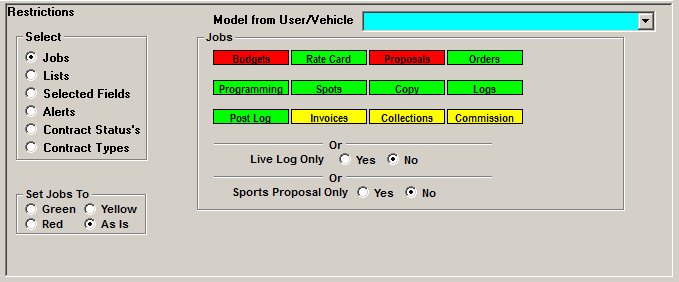
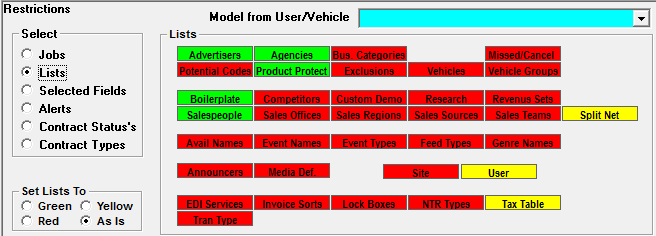
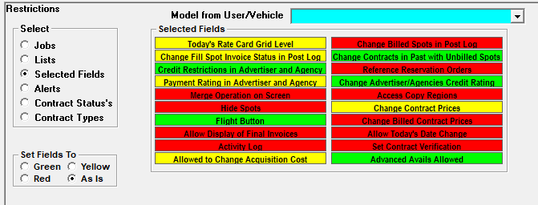
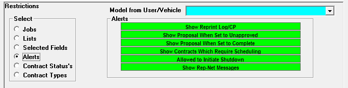
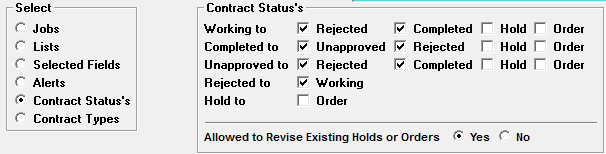
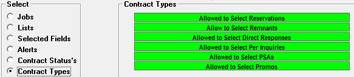

Restrictions
The Restriction section controls which screens users can and cannot enter, as well as what they can and cannot do within those screens.
- Screens set to red cannot be entered
- Screens set to yellow can be viewed, but not altered
- Screens set to green can be entered and altered
Jobs
The Jobs radio button displays the access users have to each screen on the main Jobs screen.

In the example above, the user cannot access Budgets or Proposals as they are red. The user has view access to Invoices, Collections, and Commissions as they are yellow. The user has full access to the other screens.
Live Log Only: Users set to use Live Log for real time posting can only be set up to use Live Log. (Once ‘Yes” is selected, all other fields will turn red as Live Log users cannot access the regular Jobs screens.)
Sports Proposal Only: If a user is set to Sports Proposal Only, all Jobs screens will turn red except Programming since the user will be allowed to enter Multimedia Inventory. When signing onto the system, the user will see a different job screen that only contains the screens they can access: proposals, multimedia, and reports.
Lists

The Lists radio button controls the level of access users have to each screen on the Lists screen.
As on the Jobs screen, the same color coding is used.
Note: the Site Options Screen is password protected, even with full access. Contact support@counterpoint.net to receive a keycode if you need to update an option on the Site Options screen.
A user can only be set to view User, and will only see their own user information.
Selected Fields
Once you have determined the level of access a user has to the screens, you can control what they are able to do within those screens in the Selected Fields radio button.

The following is an explanation of each Selected Field.
- Today’s Rate Card Grid Level: Not implemented.
- Change Fill Spot Invoice Status in Post Log: If set to green, the user can click in the Spot Price field in Post Log to toggle through the different options available about whether a fill spot should appear on the invoice or not. Also, when set to red, spot prices are not shown on the Post Log screen.
- Credit Restrictions in Advertiser and Agency: This allows a user to change an Advertiser/Agency’s Credit Restrictions in the Advertiser/Agency Screens. Orders cannot be scheduled if an Advertiser/Agency has any credit restrictions.
- Payment Rating in Advertiser and Agency: This allows a user to change an Advertiser or Agency’s Payment Rating in the Advertiser/Agency Screens.
- Merge Operation on Screen: This activates the Merge feature in the Advertiser and Agency Screens, which will merge advertiser or agency profiles and contracts together.
- Hide Spots: This allows users to ‘Hide’ spots in the Spots and Post Log Screens. Hidden spots will not show on invoices, and will only show on certain reports if selected. Hidden spots can be reactivated at a future date.
- Flight Button: This will allow a user to access the Flight button in the Proposal and Order Screens. The Flight button is a powerful tool that allows individual spot prices and dayparts to be altered opposed to altering the entire schedule line.
- Allow Display of Final Invoices: Final invoices are not always allowed to be displayed to ensure that they are printed. If set to green, the user can display Final Invoices.
- Activity Log: This can only be set to red or yellow. If checked, the check box “Show Activity Log” will appear in Accessories -> User Status. If the question is checked, and a user is selected, additional information about the user will appear.
- Allowed to Change Acquisition Cost: If set to green, a user can alter acquisition costs on contract schedule lines. If set to yellow, a user can view, but not change acquisition costs. (This option is only available on version 7.1 and above.)
- Change Billed Spots in Post Log: Once a spot has been billed, typically users are limited from changing the spot, however users set to Green for this field will be able to alter a billed spot in Post Log.
- Change Contracts in Past with Unbilled Spots: As a rule, contracts in the past should not be changed. If this question is set to Green and the spots in the past have not been billed, a user will be able to alter the contract.
- If “Change spots in deleted weeks behind last log date to fills” is checked on in Site Options -> Contracts, a user must also have this question set to green to utilize that feature.
- Reference Reservation Orders: This will allow a user to enter Reservation Orders.
- Change Advertiser/Agencies Credit Rating: This allows a user to change an Advertiser/Agency’s Credit Rating in the Advertiser/Agency Screens. Orders can only be scheduled if an Advertiser/Agency has been approved.
- Access Copy Regions: This allows a user to define new split copy and/or split network regions.
- Change Contract Prices: This allows Sales to change spot rates on Proposals and/or Contracts. If set to Red, they will use the prices defined in Rate Card.
- Change Billed Contract Prices: This can only be set to red or green. It can only be set to green if the “change billed prices” option in Site Options -> Options is checked. This will allow prices of billed spots to be altered. If the price is altered by a user, a question will pop-up asking if the billed prices should be altered or only the unbilled prices.
- Allow Today’s Date Change: This allows a user to change their Counterpoint System date in the Accessories menu. Important Note: even if set to green, Counterpoint does not recommend changing the system date and support@counterpoint.net should be contacted prior to doing so.
- Set Contract Verification: The Contract Verification Screen allows designated users to track and alter a contract’s status throughout the agency verification process.
- To access this screen, “Contract Verification” must be checked on in Site Options -> Contracts, and the user must be set to green for this permission.
- Advanced Avails: This setting is used to determine whether an individual user has access to the Advanced Avails tabs on the Proposals and Orders screen as part of the Advanced Avails feature (version 7.1 and above). If the Advanced Avails feature is not enabled in Traffic Site Options, then this “Advanced Avails Allowed” option will always be set to red, meaning the additional Advanced Avails tabs will not be visible. If Advanced Avails is enabled in Traffic Site Options, then the “Advanced Avails Allowed” option can be set to green for the individual users that will require access to the Advanced Avails feature. Those users that don’t require access to it can be left with that setting set to red (the Advanced Avails tabs will be hidden for those users with it set to red).
Alerts
Counterpoint has a built in Alert system that notifies designated users of tasks that need to be performed, such as reviewing a completed proposal, scheduling contracts, or reprinting logs after changes were made. If set to receive Alerts, the user will see a red flashing Alert button at the top of the Counterpoint Screen. Clicking on the Alert button will display the tasks that must be completed.

- Show Reprint Log/CP: This Alert will display if a change such as spot moves or copy changes have occurred after final logs were generated. Logs will have to be regenerated to update the change and the Affiliate System.
- Show Proposal When Set to Unapproved: Notifies users when there’s a proposal that has been set to the Unapproved status. This alert will be cleared when the status is changed from Unapproved to another status, such as working or rejected. (Version 7.1 and above.)
- Show Proposal When Set to Complete: This will alert planners that a Proposal has been completed and is ready for review prior to becoming an order.
- Show Contracts Which Require Scheduling: When a new contract is saved or an existing contract has been revised, the user will receive an alert indicating that scheduling is required.
- Allowed to Initiate Shutdown: Software upgrades, server reboots, or database maintenance may require all users to exit the System. To ensure everyone is out of the system, Counterpoint has a Shutdown feature that will automatically send shutdown warnings to users so they can save their work. Setting this to Green allows a user to initiate the System Shutdown.
- Show Rep-Net Messages: If using the Rep-Net System, you will receive an alert when an insertion order or aired spots are ready to be imported.
Contract Statuses
Every Proposal goes through a cycle before becoming an Order, from Working to Complete to Hold (if applicable) to Unscheduled Order, for example. These statuses are set by the user.

- Contract Statuses: The Contract Statuses area controls which statuses a user is allowed to select, for example, Sales may be able to set a Working Proposal to a Completed Proposal, but not able to set a Completed Proposal to a Hold.
- Allowed to Revise Existing Holds or Orders: This determines whether a user can make any changes to a Proposal once its status has been changed to Hold or Order.
Contract Types
Counterpoint has different Contract Types that affect the way in which the spots are created and scheduled. The Contract Types section controls the types of Contracts a user can select on the Proposals/Orders screen and which contract types can be viewed on some reports, such as the Proposals/Contracts report and Paperwork Summary report.

- Allowed to Select Reservations: Reservation Contracts allows inventory to be held until the actual contracts are entered. Reservation spots appear bright red on the spots screen. Once the expected contracts are received, the reservation spots are replaced with the paid spots.
- Allowed to Select Remnants: Remnant Contracts are sold after all upfront and scatter buys are booked. Remnant rates are negotiated for remaining inventory. Remnant Spots appear in orange on the Spot screen and are only scheduled as needed. Only aired spots are billed.
- Allowed to Select Direct Responses: Direct Response Orders are for commercials that ask you to ‘call in’ to buy their product. Generally there is a spot cost assigned to each commercial aired. The spots are not scheduled by the system, but created manually by dragging the advertiser from the missed area to an unsold avail
- Allowed to Select Per Inquiries: This is similar to a Direct Response Order, but typically no spot costs are known at the time the PI order is entered. Spots are scheduled manually. The contract invoices based on the number of responses received, rather than a spot price.
- Allowed to Select PSAs: These Contract types create Public Service Announcements.
- Allowed to Select Promos: These Contract types create Promotional Program Announcements.
- Allowed to Select Programmatic Buys: If the “Programmatic Buy” feature is enabled in Traffic Site Options, an additional option labeled “Allowed to Select Programmatic Buys” will be visible. This option can be set to Red or Yellow, to disallow this user access to the Programmatic Buy Alert screen. If set to Green or Yellow, the user will be able to see Programmatic Buy proposals/orders. When set to Green, the user will also be able to access the Programmatic Buy Alert screen. The "Allowed to select Programmatic Buys" option can only be set to green for a salesperson user (with a salesperson name selected from the "Salesperson" field) and only for one user. When saving, if the option is set to green for a non-salesperson user, a warning message will appear that reads, "Programmatic Buy user defined as 'Allow to select programmatic buys' with color green must also be defined as salesperson", and saving will be disallowed. Also when saving, if the user is defined as a salesperson, and the option is set to green, but there's already another salesperson user with it set to green, the following warning message will appear, "Only one user can be set up as 'Allow to select programmatic buys' with color green". (Only on version 7.1 and above. Not fully implemented.)
Tip: You can set all the fields to a certain color for the selected section by clicking the appropriate radio button in the “Set To” box in the lower left. This option exists for Jobs, Lists, Selected fields, Alerts and Contract types.